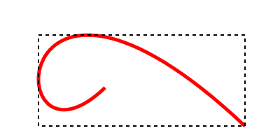

PathBoundsX()
Syntax
Result.d = PathBoundsX()Description
Returns the X coordinate (top/left corner) of the bounding box for the current vector drawing path. The result is the lowest X coordinate that stroking/filling the current path would reach.
Parameters
None.
Return value
The X coordinate of the bounding box.
Example
If OpenWindow(0, 0, 0, 400, 200, "VectorDrawing", #PB_Window_SystemMenu | #PB_Window_ScreenCentered) CanvasGadget(0, 0, 0, 400, 200) If StartVectorDrawing(CanvasVectorOutput(0)) ; construct path MovePathCursor(150, 125) AddPathCurve(0, 270, 0, -150, 350, 180) ; get path bounds x = PathBoundsX() y = PathBoundsY() w = PathBoundsWidth() h = PathBoundsHeight() ; stroke the path VectorSourceColor($FF0000FF) StrokePath(5) ; draw bounding box AddPathBox(x, y, w, h) VectorSourceColor($FF000000) DashPath(2, 5) StopVectorDrawing() EndIf Repeat Event = WaitWindowEvent() Until Event = #PB_Event_CloseWindow EndIf
See Also
PathBoundsY(), PathBoundsWidth(), PathBoundsHeight()
Supported OS
All